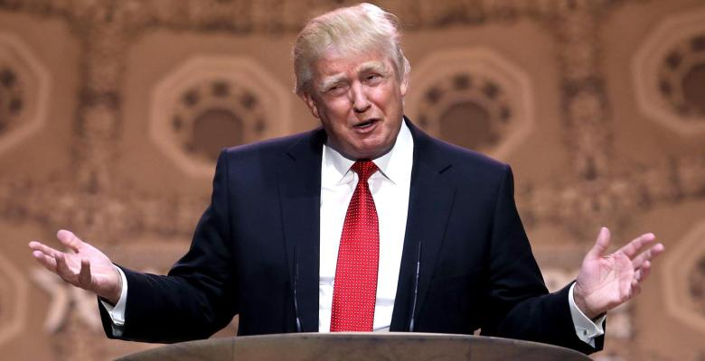

Родился Сергей Есенин в селе Константиново Кузьминской волости
Рязанского уезда Рязанской губернии, в крестьянской семье.
В 1914 году в детском журнале «Мирок» впервые опубликованы
стихотворения Есенина. Первое его стихотворение «Береза» было
опубликовано под псевдонимом «Аристон»
В 1913 году Сергей Есенин познакомился с Анной Романовной Изрядновой,
которая работала корректором в типографии «Товарищества И. Д. Сытина»,
куда Есенин поступил на работу.
28 декабря 1925 года Есенина нашли мёртвым в ленинградской гостинице
«Англетер» его друг Г. Ф. Устинов с супругой. В момент смерти поэта
дверь внутрь номера была наглухо заперта, её взламывали ломом.
В 1970-е — 1980-е годы возникли версии об убийстве поэта с последующей
инсценировкой самоубийства Есенина (как правило, в организации
убийства обвиняются сотрудники ОГПУ).
Биография Дональд Трамп

>
Дональд Джон Трамп родился 14 июня 1946 года в районе Джамейка (боро
Куинс) в Нью-Йорке.
20 января 2017 года состоялась инаугурация 45-го президента США —
Дональда Трампа. Согласно заявлению самого Трампа, традиционная
торжественная речь была подготовлена им самостоятельно, без помощи
спичрайтеров. В качестве ключевого момента речи 45-го президента США
можно отметить заявление об установлении на долгие годы нового
финансово-политического курса для Америки, направленного на
восстановление экономической мощи страны[
Дональд Трамп известен комично сыгранными ролями самого себя в
телесериалах и художественных фильмах, таких как «Один дома 2:
Потерянный в Нью-Йорке», «Няня», «Принц из Беверли-Хиллз», «Дни нашей
жизни», «Любовь с уведомлением», и ролью характерного героя в фильме
«Шалопаи». Его нередко изображают как комедийные актёры, так и артисты
других жанров. Трамп также участвует в различных ток-шоу и других
телевизионных программах.
Дональд Трамп увлекается игрой в гольф. Он является членом клуба
Winged Foot Golf Club в Мамаронеке, штат Нью-Йорк, а также регулярно
участвует в соревнованиях на своих площадках.